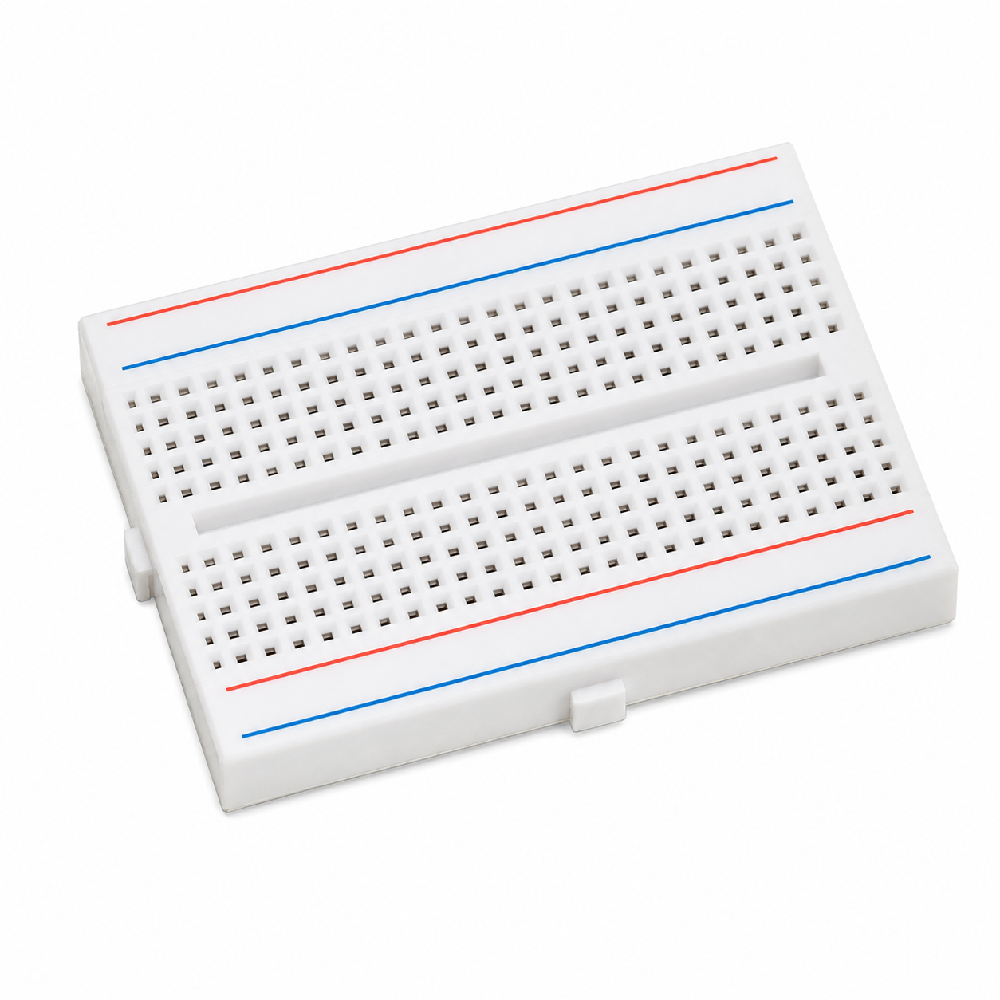

Aim
To detect objects passing through a gate using an IR sensor, count each new object, and display the count on a single-digit common-cathode 7-segment display using Arduino UNO.
About the Experiment
The system detects an object at the IR gate and increases the count by one whenever a new object is detected.
The current count is shown on a single-digit 7-segment display. The program can operate either with the actual IR sensor or in automatic simulation mode.
Components Required

Arduino UNO R3 (×1)
Main controller for object detection and counting.

IR Sensor (×1)
Detects an object passing through the gate.

Single-Digit 7-Segment Display (×1)
Displays the current object count.

Breadboard (×1)
Recommended for convenient prototyping.

Jumper Wires
Used for electrical connections.
Circuit Connections
| Component | Connection | Arduino Pin |
|---|---|---|
| IR Sensor | OUT | D2 |
| 7-Segment Display | Segment A | D3 |
| 7-Segment Display | Segment B | D4 |
| 7-Segment Display | Segment C | D5 |
| 7-Segment Display | Segment D | D6 |
| 7-Segment Display | Segment E | D7 |
| 7-Segment Display | Segment F | D8 |
| 7-Segment Display | Segment G | D9 |
| 7-Segment Display | Common Cathode | GND |

Working Principle
↓
IR gate waits for an object
↓
New object is detected
↓
Object count increases by 1
↓
Count is displayed on 7-segment display
↓
Object leaves the gate
↓
System becomes ready for the next object
After 9: Count resets to 0
Serial Monitor: Shows operating messages and current count at 9600 baud
Procedure
- Connect the IR sensor OUT pin to Arduino D2.
- Connect 7-segment display segment A to D3.
- Connect segment B to D4.
- Connect segment C to D5.
- Connect segment D to D6.
- Connect segment E to D7.
- Connect segment F to D8.
- Connect segment G to D9.
- Connect the common cathode of the display to GND.
- Connect Arduino UNO to the computer using USB.
- Open Arduino IDE.
- Enter the program given below.
- Select Arduino UNO from Tools → Board.
- Select the correct COM port.
- Verify and upload the program.
- Open Serial Monitor at 9600 baud.
- Observe the automatic simulation or set simulation mode to false to use the real IR sensor.
Arduino Code
/*
AUTOMATIC OBJECT COUNTING GATE
Arduino UNO R3 + Single Digit 7-Segment Display
AUTOMATIC SIMULATION MODE:
Simulates an object entering and leaving
the IR gate at regular intervals.
Display:
A -> D3
B -> D4
C -> D5
D -> D6
E -> D7
F -> D8
G -> D9
Common cathode -> GND
*/
// ---------------- PIN DEFINITIONS ----------------
#define IR_SENSOR_PIN 2
const byte segmentPins[7] = {
3, 4, 5, 6, 7, 8, 9
};
// ---------------- SIMULATION SETTINGS ----------------
// true = Automatic simulation without manual sensor input
// false = Read the actual IR sensor on D2
const bool AUTOMATIC_SIMULATION = true;
// Time between simulated objects
const unsigned long OBJECT_INTERVAL = 3000;
// Simulated object detection duration
const unsigned long OBJECT_DURATION = 800;
// ---------------- VARIABLES ----------------
byte objectCount = 0;
bool objectDetected = false;
bool previousObjectDetected = false;
unsigned long simulationStartTime = 0;
// ---------------- DIGIT PATTERNS ----------------
// Segment order: A, B, C, D, E, F, G
const byte digitPatterns[10][7] = {
{1, 1, 1, 1, 1, 1, 0}, // 0
{0, 1, 1, 0, 0, 0, 0}, // 1
{1, 1, 0, 1, 1, 0, 1}, // 2
{1, 1, 1, 1, 0, 0, 1}, // 3
{0, 1, 1, 0, 0, 1, 1}, // 4
{1, 0, 1, 1, 0, 1, 1}, // 5
{1, 0, 1, 1, 1, 1, 1}, // 6
{1, 1, 1, 0, 0, 0, 0}, // 7
{1, 1, 1, 1, 1, 1, 1}, // 8
{1, 1, 1, 1, 0, 1, 1} // 9
};
// ---------------- SETUP ----------------
void setup() {
pinMode(IR_SENSOR_PIN, INPUT);
for (byte i = 0; i < 7; i++) {
pinMode(segmentPins[i], OUTPUT);
}
Serial.begin(9600);
displayNumber(0);
simulationStartTime = millis();
Serial.println("==============================");
Serial.println(" AUTOMATIC OBJECT COUNTING GATE");
Serial.println("==============================");
if (AUTOMATIC_SIMULATION) {
Serial.println("Mode: AUTOMATIC SIMULATION");
Serial.println("Objects will pass automatically.");
} else {
Serial.println("Mode: REAL IR SENSOR");
Serial.println("Waiting for object detection.");
}
Serial.println("------------------------------");
Serial.println("Current Count: 0");
}
// ---------------- MAIN LOOP ----------------
void loop() {
if (AUTOMATIC_SIMULATION) {
automaticSimulation();
} else {
realIRSensor();
}
}
// ---------------- AUTOMATIC SIMULATION ----------------
void automaticSimulation() {
unsigned long currentTime = millis();
unsigned long elapsedTime =
currentTime - simulationStartTime;
bool simulatedDetection =
(elapsedTime % OBJECT_INTERVAL) < OBJECT_DURATION;
objectDetected = simulatedDetection;
if (objectDetected == true &&
previousObjectDetected == false) {
increaseCount();
Serial.println("Simulated IR Detection: OBJECT DETECTED");
Serial.print("Object Count = ");
Serial.println(objectCount);
Serial.println("Display Updated");
Serial.println("------------------------------");
}
if (objectDetected == false &&
previousObjectDetected == true) {
Serial.println("Object passed through gate.");
Serial.println("Waiting for next object...");
Serial.println("------------------------------");
}
previousObjectDetected = objectDetected;
delay(10);
}
// ---------------- REAL IR SENSOR ----------------
void realIRSensor() {
int sensorState = digitalRead(IR_SENSOR_PIN);
// Active LOW sensor:
// LOW = object detected
// HIGH = no object detected
objectDetected = (sensorState == LOW);
if (objectDetected == true &&
previousObjectDetected == false) {
increaseCount();
Serial.println("IR SENSOR: OBJECT DETECTED");
Serial.print("Object Count = ");
Serial.println(objectCount);
Serial.println("------------------------------");
}
if (objectDetected == false &&
previousObjectDetected == true) {
Serial.println("Object left the gate.");
Serial.println("Ready for next object.");
Serial.println("------------------------------");
}
previousObjectDetected = objectDetected;
delay(10);
}
// ---------------- COUNT FUNCTION ----------------
void increaseCount() {
objectCount++;
// Single digit: reset after 9
if (objectCount > 9) {
objectCount = 0;
}
displayNumber(objectCount);
}
// ---------------- DISPLAY FUNCTION ----------------
void displayNumber(byte number) {
for (byte i = 0; i < 7; i++) {
digitalWrite(
segmentPins[i],
digitPatterns[number][i]
);
}
}Expected Output
Each time a new object is detected, the count increases by one and the updated value is shown on the single-digit 7-segment display.
Detection duration: 800 ms
Display: Shows count from 0 to 9
After 9: Returns to 0
Result
The Automatic Object Counting Gate experiment was implemented using Arduino UNO, an IR sensor and a single-digit 7-segment display. Each new object detection increases the count and updates the display.
What You Learn
- How to detect objects using an IR sensor.
- How to recognize a new detection using state transitions.
- How to count detected objects using Arduino.
- How to control a common-cathode 7-segment display.
- How to display digits from 0 to 9.
- How to use Serial Monitor for debugging and status messages.
- How to switch between automatic simulation and real sensor operation.